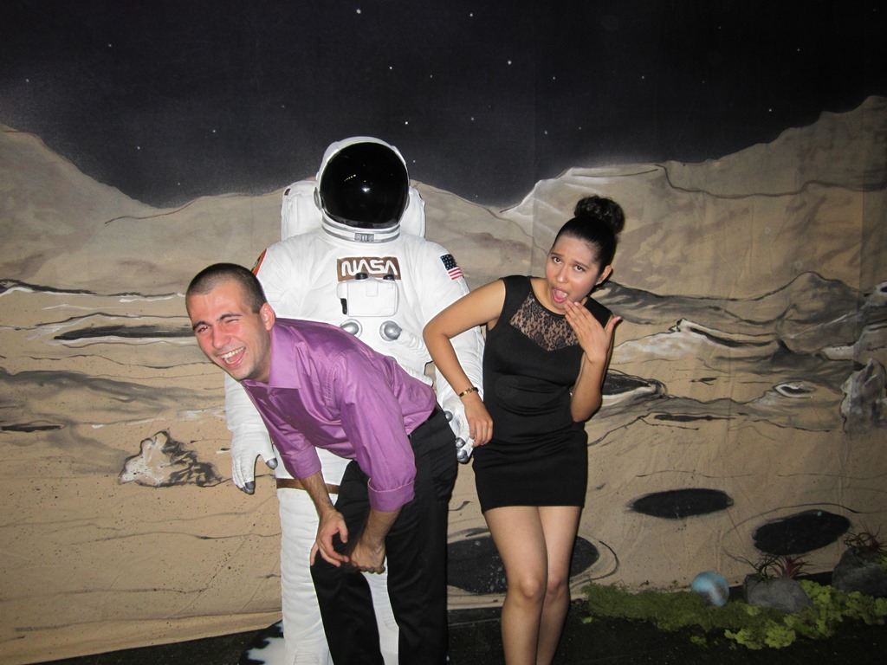
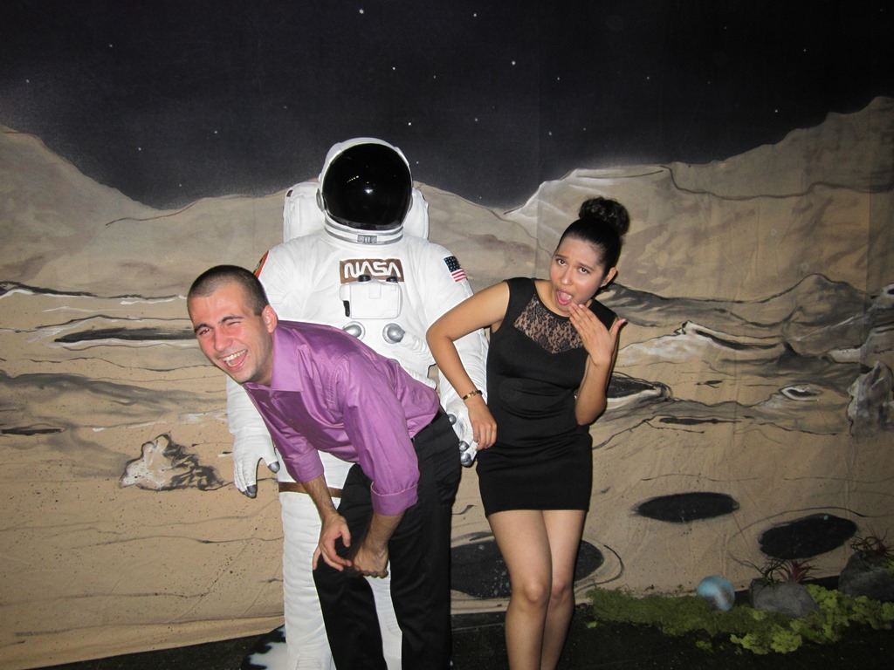

my name is Hristo Nenov
 

I am from Pliska, Bulgaria. I am double majoring in Computer Sciences and Information Systems at the American University in Bulgaria. Currently, I'm spending my third year of my bachelor degree at the Illinois Institute of Technologies in Chicago.
Prior to my exchange in the U.S., I was working as a Resident Assistant at the dorms of AUBG. I was also part of the executive bodies of the Computer Science Student Union and German club.
I enjoy spending my time on YouTube and reading various blogs. Travelling and going out with my friends is also done on a daily basis.